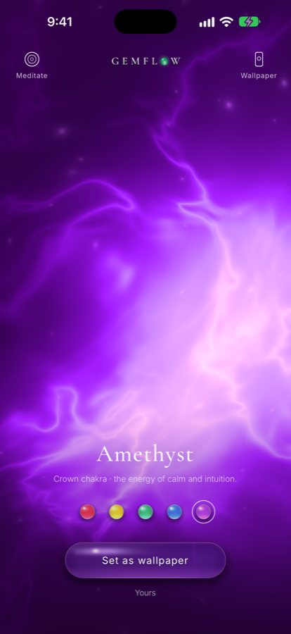

Crown chakra · amethyst
The crown chakra: a thousand petals open to the sky
When you look up at the night sky and feel homesick for somewhere you have never been, when everything is fine and still you sense there must be something more, it is not that you are lost. Something in you remembers where it came from. The old traditions place that memory just above your head: a lotus of a thousand petals, whiter than the full moon, turned down towards you.

Amethyst, the violet stone of the crown chakra, as a living light in the Gemflow app.
When you long for more
Do you ever feel there must be something more?
Perhaps you have read the books, lit the candles, tried the apps. Your days are full, and yet there is a quiet ache that nothing on your list can answer. You are not asking for more things. You are asking to feel part of something larger, to know that you belong to the stars as much as to your street. That longing is not a flaw in you. In the old picture of the body, it has a place of its own, at the very top of you, where you open to the sky.
Sahasrara · Sahasrāra
The lotus of a thousand petals
The Sanskrit name of the crown chakra is Sahasrara (Sahasrāra), “thousand-petalled”. In the 1577 text it is not counted among the six chakras along the spine at all. It sits above them, beyond the body’s map, at the place where the old commentators say the soul meets Shiva, pure consciousness. The six lotuses below are rooms of a house. The thousand-petalled lotus is the open sky above its roof.
Whiter than the moon
A flower that faces down towards you
“This Lotus, lustrous and whiter than the full Moon, has its head turned downward. It charms.”
That is how the Sat-Chakra-Nirupana (Ṣaṭ-Cakra-Nirūpaṇa), written by Pūrṇānanda in Bengal in 1577, pictures the crown: a thousand petals whiter than the moon, its filaments “tinged with the colour of the young Sun”. Around its petals the fifty letters of the alphabet go round and round, twenty times. Inside it shines a full moon “resplendent as in a clear sky”, “moist and cool like nectar”. Notice which way it faces. Every other lotus opens upward. This one bends down over you, like a hand over a sleeping child. You do not have to climb to reach it. It is already leaning towards you.
A crown of glory
What happens when the crown opens
“…no longer a depression but a prominence, standing out from the head as a dome, a veritable crown of glory.”
In 1927 C. W. Leadbeater described the crown center as “the most resplendent of all”, holding “all sorts of prismatic hues” but “predominantly violet”, with a small whirlpool “of gleaming white flushed with gold in its heart”. He wrote that it is usually the last to awaken, and that when it does, it turns inside out: it stops only receiving the light and begins to give it away. Perhaps this is the secret of the crown. It is not where you finally get something. It is where you finally shine.
Amethyst
The stone of dreams
Today the crown chakra is painted violet, and amethyst is its stone, paired by their shared color. Its old names already point upward. The Hebrew name for the stone, aḥlamah, comes from ḥalom, “dream”: it was believed to bring dreams and visions. In 1576 the French poet Rémy Belleau told how a pure maiden named Amethyst, on her way to the shrine of Diana, was turned into a clear white stone; the god Bacchus, repenting, poured wine over her, and she has been violet ever since. And in the ninth century Rabanus Maurus, Archbishop of Mainz, saw in the amethyst “the constant thought of the heavenly kingdom in humble souls”. A stone of dreams, of transformation, of quiet heaven. It does not lift you anywhere. It reminds you that you were never as far from the sky as you thought.
From the voice to the silence
Where every chakra comes home
In the old picture the chakras rise like lotuses along the spine. Below the crown lie the brow and the throat, where you see and speak; below them the heart, the fire and the root. The crown is where all of them are gathered into one. After the voice comes silence, and after the silence, light. This is why the crown is not something to reach for. It is what you are when nothing is missing.
A ritual
Resting under the thousand petals
- Sit or lie down with your spine long. Let your face soften, especially the space between your eyebrows.
- Rest a piece of amethyst on the top of your head or just above it, or let amethyst’s violet light glow in Gemflow in front of you, with 963 Hz playing softly.
- Breathe in and imagine a white lotus of a thousand petals above your head, its face turned down towards you.
- Breathe out and let its light fall over you like cool moonlight, from your crown to your shoulders, to your hands, to your feet.
- Stay in the silence for a few breaths. You do not need to ask for anything here. Only notice that you are held.
- Before you open your eyes, say one sentence of your own. For example: I belong to something larger than me.
The rainbow road
How the crown changed its colors
The crown has worn the palest color and the deepest one on its way to us, and in between, every color at once.
- 1576 · In France, Rémy Belleau writes the tale of the maiden Amethyst, turned to a white stone and then stained violet with wine.
- 1577 · In Bengal, Pūrṇānanda writes the Sat-Chakra-Nirupana (Ṣaṭ-Cakra-Nirūpaṇa). Above the six chakras is a lotus of a thousand petals, “whiter than the full Moon”.
- 1927 · C. W. Leadbeater, in The Chakras, sees the crown as full of “prismatic hues” but “predominantly violet”, with a heart of white and gold.
- Today · Over the 20th century the seven chakras came to be painted as a rainbow, and the crown took violet, the last color before light becomes invisible. White, then violet, then all of them at once.
Your daily companion
Amethyst and 963 Hz in Gemflow
In Gemflow, the crown is amethyst: a violet light that glows from deep inside the stone, lavender at the center and plum at the edges, alive on your screen and never the same twice. Touch it and it follows you. Open Meditate and it rises and settles with your breath while a soft 963 Hz tone shimmers beneath guqin harmonics and singing bowls. One minute a day to rest under something larger than you. More about its tone: 963 Hz, the frequency of connection; more about the stone: amethyst.
Walk the other chakras
Every chakra has its own color and its own stone: which stone goes with each chakra color. For the frequency of each, see the chakra stones and frequencies chart. Below the crown: the throat chakra, where your silence becomes a voice, the heart chakra, the solar plexus and its fire, and the root chakra, the red light that brings you home.
The crown chakra at a glance
| Sanskrit name | Sahasrara (Sahasrāra), “thousand-petalled” Avalon 1919 |
|---|---|
| Where | Above the six chakras, at the top of the head Verse 40 |
| Petals | A thousand, “lustrous and whiter than the full Moon”, head turned downward Verse 40 |
| Filaments | “Tinged with the colour of the young Sun” Verse 40 |
| Letters | The fifty letters, A to La, circling the petals twenty times Summary of verses 41–49 |
| Inside | A full moon “resplendent as in a clear sky”, “moist and cool like nectar”; within it a triangle and the Great Void Verse 41 |
| Counted as | Not one of the six chakras; the lotus above them The Serpent Power |
| Color in 1927 | “Prismatic hues”, “predominantly violet”, with a center “of gleaming white flushed with gold” Leadbeater, The Chakras |
| Radiations in 1927 | Nine hundred and sixty in the outer circle, twelve in the center Leadbeater, The Chakras |
| Color today | Violet (sometimes white) Modern rainbow system |
| Stone (modern) | Amethyst, and clear quartz Modern crystal practice |
| In Gemflow | Amethyst, 963 Hz Gemflow app |
Verse numbers refer to the Sat-Chakra-Nirupana (1577) in Arthur Avalon, The Serpent Power (1919).
Questions
What color is the crown chakra?
The crown chakra is violet in the modern system, sometimes white. In the 1577 Sat-Chakra-Nirupana its thousand petals are “whiter than the full Moon”; Leadbeater (1927) described it as many colors, predominantly violet.
What does Sahasrara mean?
Sahasrara (Sahasrāra) is the Sanskrit name of the crown chakra and means “thousand-petalled”. In the Sat-Chakra-Nirupana (1577) it is the lotus of a thousand petals above the six chakras.
Is the crown chakra one of the seven chakras?
The crown chakra is the seventh chakra in the modern system. In the 1577 Sat-Chakra-Nirupana, translated as The Serpent Power (1919), it is not counted among the six chakras but described as the lotus above them.
Where do the crown chakra’s colors come from?
The crown chakra’s colors come from three layers: the 1577 Sat-Chakra-Nirupana (white petals, filaments like the young sun), Leadbeater’s The Chakras (1927, many hues, mostly violet), and the 20th-century rainbow system (violet).
Which stone goes with the crown chakra?
Amethyst is the stone most often paired with the crown chakra, following its modern violet color; clear quartz is also common. The older Sanskrit texts do not name a stone.
Which frequency goes with the crown chakra?
The crown chakra is usually paired with 963 Hz, a Solfeggio frequency, in modern meditation music. The pairing is modern practice, not from the older texts. In Gemflow, amethyst carries 963 Hz.
Where does the name amethyst come from?
The name amethyst comes from Greek and refers to a belief that the stone kept its wearer from drunkenness. Its Hebrew name, aḥlamah, is linked to ḥalom, “dream” (Kunz, 1913).
How do I meditate with amethyst?
To meditate with amethyst, sit or lie down, rest the stone at the top of your head and breathe slowly for a few minutes, imagining cool white light falling over you. End with one sentence of intention.
Can amethyst heal me?
Amethyst is not a medical treatment. People use it as a companion for meditation, sleep rituals and quiet reflection.
Notes and sources
- Pūrṇānanda, Ṣaṭ-Cakra-Nirūpaṇa (Sat-Chakra-Nirupana, 1577), in Arthur Avalon (Sir John Woodroffe), The Serpent Power (1919). Verse 40: “Above all these… is the Lotus of a thousand petals. This Lotus, lustrous and whiter than the full Moon, has its head turned downward. It charms. Its clustered filaments are tinged with the colour of the young Sun. Its body is luminous with the letters beginning with A, and it is the absolute bliss.” Verse 41: “Within it (Sahasrara) is the full Moon, without the mark of the hare, resplendent as in a clear sky. It sheds its rays in profusion, and is moist and cool like nectar. Inside it… is the Triangle, and inside this, again, shines the Great Void.” Summary of verses 41–49: “The fifty letters of the Alphabet from A to La, which are also white, go round and round its thousand petals twenty times.”
- C. W. Leadbeater, The Chakras (Theosophical Publishing House, 1927): the crown center “is when stirred into full activity the most resplendent of all… It seems to contain all sorts of prismatic hues, but is on the whole predominantly violet”, with “nine hundred and sixty” radiations and “a sort of subsidiary central whirlpool of gleaming white flushed with gold in its heart”; when it awakens it becomes “no longer a channel of reception but of radiation, no longer a depression but a prominence, standing out from the head as a dome, a veritable crown of glory.”
- George Frederick Kunz, The Curious Lore of Precious Stones (1913): the legend of the maiden Amethyst from Rémy Belleau’s Amours et nouveaux eschanges des pierres précieuses (1576); the Hebrew name aḥlamah and “the virtue of inducing dreams and visions (cf. halom, ‘dream’)”; the Greek name as “an enemy or preventive of inebriety”; Rabanus Maurus, Archbishop of Mainz (786–856): “in the amethyst, the constant thought of the heavenly kingdom in humble souls.”
- Kurt Leland, Rainbow Body: A History of the Western Chakra System from Blavatsky to Brennan (Ibis Press, 2016), on how the rainbow sequence took shape in the 20th century.
- Pairing amethyst and 963 Hz with the crown chakra is a modern meditation practice. Gemflow is for relaxation, meditation and ritual; it is not a medical product.
© 2026 Gemflow · Home · Chakra colors · Chakra stones chart · Root chakra stone · Solar plexus chakra stone · Heart chakra stone · Throat chakra stone · 963 Hz · Ruby · Citrine · Emerald · Sapphire · Amethyst · YouTube · Privacy